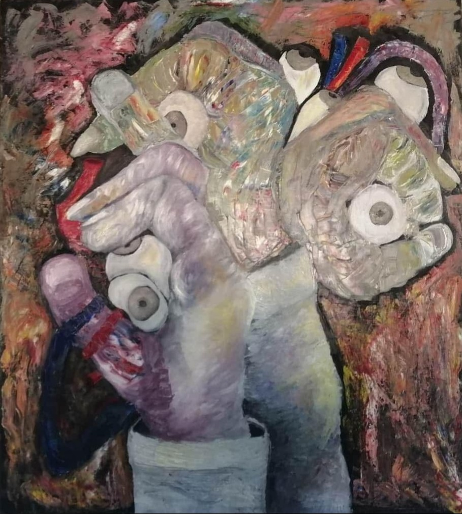
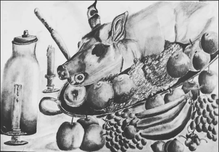
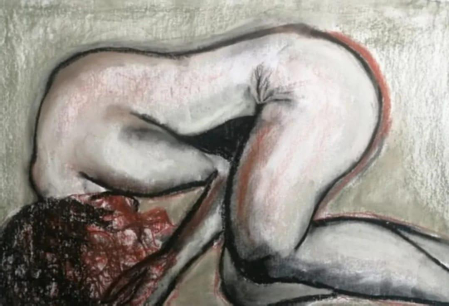

artífice —entendido como el creador, el hacedor— se representa simbólicamente a través de estas manos metamorfoseadas que construyen y deforman la realidad. La paleta de colores vibrantes y los contrastes texturales aportan dinamismo, a la vez que acentúan la tensión entre lo orgánico y lo mecánico.\n\n Este arrecife no es natural: es producto de una mente que fabrica mundos desde el extrañamiento, la fragmentación y la multiplicidad de miradas.')">Arrecife del artífice
Técnica: Óleo sobre tela · Año 2019

Paracaidista
Técnica: Óleo sobre tela · Año 2019

Niñez, Aprendizaje
Técnica: Óleo sobre tela · Año 2025

Banquete puede interpretarse como una crítica a los rituales de consumo, al exceso y al sacrificio que subyace en los festines. Lejos de ser una simple naturaleza muerta, esta obra se convierte en una reflexión visual sobre los placeres que ignoramos, los cuerpos que convertimos en espectáculo y los rituales cotidianos que normalizan la opulencia y la explotación. El banquete no es solo un acto de comida, sino un acto simbólico de poder y sacrificio.')" >Banquete
Técnica: Lápiz sobre papel · Año 2019

Acoquinada alude directamente a las secuelas del abuso sexual y la violencia de género. La postura corporal —cerrada, casi sin espacio para respirar— no es solo una imagen de miedo, sino una metáfora de la parálisis emocional que puede acompañar estas vivencias. Lejos de buscar el espectáculo del sufrimiento, esta obra invita a mirar de frente lo que muchas veces se oculta: el repliegue silencioso que deja la agresión, el cuerpo como lugar de memoria del daño, y la resistencia que persiste aún en la posición más retraída.')" >Acoquinada
Técnica: Carboncillo y sanguina · Año 2019

El sacrificio de Amphitrite
Técnica: Óleo sobre tela · Año 2024

Estragos de una guerra
Técnica: Óleo sobre tela · Año 2024